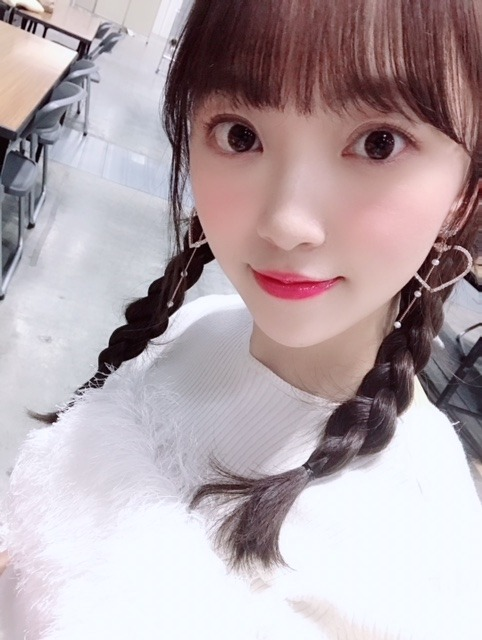

2019/0116Wedいちごいろ
こんにちは☺︎

一昨日の握手会では久しぶりに
三つ編みをしてみました
握手会に来てくださった皆さん、
そしてらじらー！
聴いてくださった皆さん、
ありがとうございました✨

カーディガンは仲良しのメイクさんに
いただいたSNIDELのカーディガン！
紫色好きだからたくさん着てます☺︎
中には韓国で買った花柄のブラウス
スカートと靴はどこのか不明です(-.-;)

中のニットはSNIDELで
重ね着してるキャミはリリーブラウンです〜
握手会で最近お気に入りのコスメを聞かれたので
ちょびっとだけ紹介します
最近は(11月終わりくらいかな)
イプサのアイシャドウ(デザイニングアイシェード05)とファンデーション(ファウンデイションアルティメイト100)とザ・タイムRリップエッセンス
新しく買いました
年末の歌番組は全部イプサのファンデでした！
あとは髪型や衣装に合わせてアイメイクや
リップの色も変えてます

この時の巻き方は
波みたいなウェーブ巻きで
ストレートアイロンで内外で繰り返し波みたいに巻いて毛先をコテで内巻きに1カールさせてます☺︎
カーディガンの色に合わせて同じ色の
フーミー (キラメキアイシャドウスミレ3)も
まぶたに広く塗ってるよ✨
メイクは季節やテーマごとに変えて楽しめるし
自分に合うメイクで整形に頼らず
いかに自分がなりたい自分に
近づけるかだと思っているので
これからも女の子として
メイクは楽しみつつ追求していきたいです✨
もちろんドラマや映画などの映像作品ではほぼすっぴんのナチュラルメイクだったり役にあったメイクをしていくけれど、プライベートや歌番組では自分でしたいメイクをしていきたい！
いまは
CHICCAのチークとリップスティックが
気になっていて...
売り切れが多いので絶賛探し中です☺︎
早く使いたいな〜

今年のメイクキーワードは
#ふわふわチーク
#ぷるツヤ肌
#キラキラまぶた
にするんだ✨✨
女の子寄りのぶろぐになっちゃったけど
男子のみなさん！！
あ、女の子も！
おすすめの"ポジティブになれる"
"感動する"
"勇気付けられる"
いい本があったら教えてください！
今年は映画と漫画だけじゃなく
本も色々読みたい
では☺︎
コメント(535)
ファッション専門書を読むことが多い
俺がハマった恩田陸さんの
夜のピクニックは感動するよー
俺のまわりでも評判良かった♪
飛鳥ちゃんに色々と聞いてみたら？
『｢私が笑ったら、と死にますから｣と水品さんが言ったんだ』
の2冊はおすすめです！
漫画だけどおすすめ
可愛いですね！
本は感動する系で「優しい死神の飼い方」はいかがでしょうか？
未央奈のお勧めもあったら教えてください！
未央奈ちゃんがおすすめしてくれたハンドクリーム、とっても最高です！
私も未央奈ちゃんみたいなｶﾜｲｲ女の子になれるように、頑張ります
本だと、重松清さんのきみの友だち や、小路幸也さんの東京バンドワゴン が好きです〜！
漫画だと学園アリスや、赤髪の白雪姫、それとホットギミックと同じベツコミの作品電撃デイジーやクイーンズクオリティ、がおススメです！
僕が読んで欲しい本を紹介します！
それは、『 思うは招く』という植松 努さんという方が書いた本が
すごく感動しました！ YouTubeでも動画も出しているので、
良かったら是非見てください\( ¨̮ )/
じゃら～ん じゃら～ん(σ･ᴗ･ )σ
本か読まないなー
2月3日個別握手会行く
よろしく
なんか進めれれば良かった。
毎回毎回、未央奈が可愛過ぎて、目の前に行くと緊張でマトモに喋れずに終わってしまう…
右手の指は大丈夫？早く治るように祈ってるよ！
感動する本なら、東野圭吾の「人魚の眠る家」！
これは本も映画もどっちも良くて、両方読んで見て欲しい！
これからも応援しているよ！
かなり前に読んだことがある本ですが嫌われる勇気っていうのはおススメです^ ^
でも堀さんの場合沢山の方に好かれてるので関係なさそうですけど^ ^
声が心配でしたがあまり無理はしないでください^ ^
でもすごく可愛かったです笑
洋服にあってる！！
とても癒されました。
ありがとう！
一番はショートかなー
これからも頑張って下さい
ありがとう。
三つ編みの堀ちゃんとても可愛いね。
また、らじらーでは堀ちゃんらしさ全開でとても面白かったよ。今日のレコメン楽しみにしてるね。
お仕事などなど、今日もお疲れ様でした！
メイクについてあまりよく分からず、難しいなぁと常日頃思っています。堀さんみたいに女子力を高めたいです(๑•̀ㅂ•́)و✧
私はいつもブログなどは見るだけで終わってしまっていて、一時期コメントしようと奮闘していましたが、三日坊主で終わってしまいました…
ただ、どうして私が今日コメントを書こうと思ったかというと、とても好きな本があるからです。『裸でも生きる』という本です。
この本は、著者の自伝的小説でマザーハウスというお店を立ち上げるまでのことが書かれています。ネタバレになってしまうので詳しいことは書けませんが、様々な困難に遭い、ボロボロになりながらも奮闘する生き方に私はとても感化されました。
自分なら、絶対に諦めてしまう事でも逆境をバネに次のアクションを起こせる彼女の強い心みたいに自分もいつかなりたいな、と元気をもらえます。
もう堀さんには強い心があるからあまり読む必要も無いと思いますが、もし何か挫折しそうになったり、心にエネルギーやパワーが欲しいと思ったら是非読んでみてください(*´∀｀)
これからも無理をしない程度に頑張ってください!
陰ながら応援しています……
めちゃくちゃ可愛くて固まりました笑笑
またいくね!
ブログ更新ありがとう!
未央奈、痩せたよね？
痩せても、可愛いから、いいんだけど、
痩せたら、免疫力、体力が落ちがちだから、
くれぐれも、
身体には気をつけてね。
乃木中のツインテール晴れ着、
めちゃくちゃ可愛いかったよ。
声は枯れてたけど、
笑顔も抜群でした。
今年も、
推し続けるしかないね！
受験生でレコメンやブログ見て頑張ってます！
『僕は何度でも、きみに初めての恋をする』って本読んで欲しい！普段から結構本を読むんやけど
これはずっと記憶に残る本で見返します！
是非読んでみてください
みおなちゃんは、写真の通り可愛い人
だけど、ラジオの妄想は途轍もないね
この間のらじらー。ホさんのコーナー
以外でも話が膨らむ膨らむ。面白過ぎ
です。
髪が伸びてきて、スタイリングが決ま
ってきましたね。
メイクの事はよくわからないけど、
みおなちゃんのメイクに掛ける真摯な
態度には、アイドルやモデルとしての
責任感を感じます。
あとは、せっかくのファーのアウター
ちりちりにしない事かな。
早く握手会行きたい！
おすすめの本は火花読みなよ笑笑
また未央奈に逢う日まで筋トレ頑張ります！
写真でも見つめられると照れるや～ん！
握手会お疲れ様でした！！
三つ編みも似合ってて可愛いらしいです♡
私服姿は春らしくてスタイリッシュだし、
巻き髪姿の方もなかなか悩ましいですよ♡
メイクの方も春らしくて華やかだし、
写真からも良い匂いがしてきそうです～♡
らじらー！サンデーも楽しかったし、
今夜のレコメン！もとっても楽しみです♪
みおちゃんは常にポジティブだけど、、
今後も更にポジティブを極めるのですね☆
最近、ポジティブ・ビームが出てますよー☺️
未央奈ちゃんも呼んでたって言ってたけど、(笑)
勇気を貰える作品は『時をかける少女』かな〜
映画だったら、『メアリと魔女の花』がオススメ！！
久々に握手行きましたが
やはり未央奈さんは可愛い
最高です
今年も改めてよろしくお願いします
SONYでした❗♪ヽ(´▽｀)/
モデルさんみたいな画像ですね笑
やっててもおかしくない！！
｢ぼくは明日、昨日のきみとデートする｣
を書かれた七月隆文さんの小説です！
色んな髪型 可愛いな～
それぞれ 印象が変わるね！
本はライトノベルしか読んでないや
体調に気を付けてね
んじゃね～～～～～
メイク話良き！
キッカいいみたいね〜！
ベキュアハニー使ってみたくて買うか悩み中…
ディオールのマキシマイザーが良すぎて(u_u)
最近はディオール、NARS、ポルジョしか
使ってないかも…（笑）
新しいのにしたいけどなかなか浮気できないぃ
卒コンのグッズ今日発売みたいね〜
どいや買おうかな…未央奈はもらうの？？
ばいぃ
三つ編み可愛いよ～❗
次回の握手会での髪形も楽しみにしてます～❗
私は、一時期入院していて、本をよく
読んでました！
小説だったら、池井戸さん(あきらとアキラ)とか
東野さん(祈りの幕がおりる時)など、が
まぁ、てっぱんと言えばてっぱんかな～
ちなみに、堀ちゃんは、かずみんの
｢トラペジウム｣読んだのかな？
私は読みましたよ～！
アイドルの堀ちゃんだったら、わかることが
たくさんあるのでは⁉
みり愛ちゃんとのコンビも最高ですよ❗
いつも写真多くあげてくれてありがとう❗
うちの学校では、インフルエンザが流行って
きているから、堀ちゃんも風邪には
気を付けて過ごしてね❗
自分も受験までもうすぐなのでお互い、
気をつけようね～！
次回の更新も期待していますよ～‼
おやすみおな～❗
握手会とか部ごとで変えてくれるからつい何回も行きたくなってしまう笑
だから飽きないのかもしれません。
かわいいは正義！
もっと話したい、もっと行きたいって思えた！！
ありがとう！！
いつも応援してます！！
握手会の写真はどれもきれいでした。
オススメの本は
「最後の医者は桜を見上げて君を思う」です。
この本はシリーズ全３巻なので
とても読むのには時間がかかると思いますがぜひ読んでほしいです。
もうひとつは「ウソつきチョコレート」です。
この本は自分の駄目なところを必死に直そうとする話で
最後にはポジティブになれるのではないかと思います。
最後にこれからも応援してます頑張ってください。
発想が予想外の更に斜め上をいきますね！
ポジティブになれる本があったら、私も知りたいです。
ポニテはずるい！
巻き方とかうれしいです！
イプサのファンデ気になってますが何の種類か具体的に教えてくれるとうれしいですー！
ハートのイヤリング可愛い
三つ編みももちろん可愛いけど、五枚目のポニーテールがやっぱりたまらなく可愛い
今年もいっぱいポニーテールしてね
本の事は飛鳥ちゃんに聞いた方がいいのでは？ あっ！飛鳥ちゃんはドロドロしたものが好きだからダメか(笑)
14日の握手会癒された〜！
5部の「みつあみおな」最高でした！！！
てか、どの髪型も最高でした！2部も見たかった…(T ^ T)
2月3日の個握、3部からだけど楽しみです！！！
本ですが、「陽だまりの彼女」なんてどうでしょう〜
感動します！！！
って本おすすめ！！
友だちに誕生日プレゼントでもらったやつなんやけどとにかく癒されるし元気がでる！
おすすめです！！！
重松清さんの"まゆみのマーチ"読んだことありますでしょうか？
とても感動的で大好きな作品です。短編集の中に掲載されていると思います。文字通り短編なので忙しい毎日にも合間合間で割と早く読むことができるのではと思います！是非ご賞味あれ。
いつも勇気付けられてます。これからも可能な限りよろしくお願いします。
どの写真も撮っても素敵です✨
オススメの本は三日間の幸福です！
とても感動するので是非読んでみてください ♂️ ♀️
バッテリーかなー


テレビでいつもやってるウインクを目の前でやってくれて意識が飛びそうでした。
岐阜の話もできて、未央奈も可愛いすぎて良かったです!